Министерство науки и высшего образования Российской Федерации
Федеральное государственное автономное образовательное учреждение высшего образования
«Национальный исследовательский университет ИТМО»
Факультет программной инженерии и компьютерной техники
Отчёт по лабораторной работе №3
по дисциплине «Системы искусственного интеллекта»
Модуль 2. Методы машинного обучения
Тема: «Линейная регрессия»
Выполнил:
студент группы P3319
Быков Лев
Преподаватель:
Болдырева Елена Александровна
г. Санкт-Петербург
2026
Цель работы — реализовать множественную линейную регрессию методом наименьших квадратов без готовых библиотек машинного обучения, построить несколько моделей на реальном наборе данных и сравнить их по коэффициенту детерминации.
Задание:
Студенты с нечётным порядковым номером используют датасет об успеваемости студентов (Student Performance), он и выбран в работе.
Файл Student_Performance.csv содержит 10 000 записей и
6 столбцов. Целевая переменная — Performance Index, итоговый
индекс успеваемости от 10 до 100. В отчёте используются короткие имена
столбцов (таблица 1).
| Исходное имя | Короткое имя | Тип | Описание |
|---|---|---|---|
| Hours Studied | Hours | целое, 1–9 | часы на учёбу |
| Previous Scores | Previous | целое, 40–99 | баллы за предыдущие экзамены |
| Extracurricular Activities | Extracurricular | категория Yes/No | участие во внеучебной деятельности |
| Sleep Hours | Sleep | целое, 4–9 | среднее время сна в сутки |
| Sample Question Papers Practiced | Papers | целое, 0–9 | число прорешанных пробных вариантов |
| Performance Index | Performance | число, 10–100 | целевая переменная |
Таблица 1 — Признаки датасета
Описательная статистика вычислена средствами Pandas
(describe с дополнительными квантилями 5 % и 95 %)
и приведена в таблице 2 и на рисунке 1.
| count | mean | std | min | 5% | 25% | 50% | 75% | 95% | max | |
|---|---|---|---|---|---|---|---|---|---|---|
| Hours | 10000 | 4,99 | 2,59 | 1 | 1 | 3 | 5 | 7 | 9 | 9 |
| Previous | 10000 | 69,45 | 17,34 | 40 | 42 | 54 | 69 | 85 | 96 | 99 |
| Sleep | 10000 | 6,53 | 1,70 | 4 | 4 | 5 | 7 | 8 | 9 | 9 |
| Papers | 10000 | 4,58 | 2,87 | 0 | 0 | 2 | 5 | 7 | 9 | 9 |
| Performance | 10000 | 55,22 | 19,21 | 10 | 24 | 40 | 55 | 71 | 86 | 100 |
Таблица 2 — Описательная статистика числовых признаков
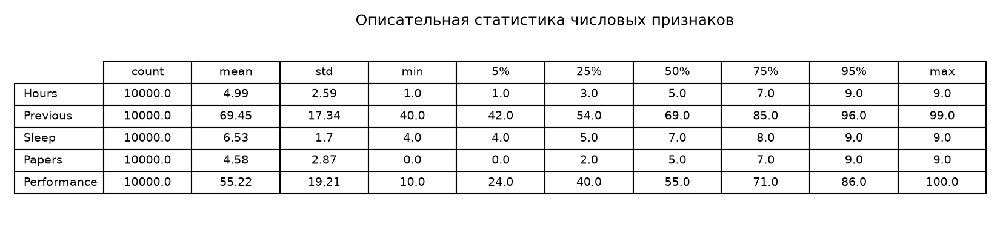
Рисунок 1 — Таблица статистики, сформированная программой
Признаки Hours, Sleep, Papers и
Previous распределены практически равномерно на своих
интервалах, среднее и медиана совпадают (рисунок 2). Целевая переменная
имеет унимодальное, близкое к симметричному распределение. Выбросов нет:
все значения лежат в естественных границах шкал (рисунок 3).
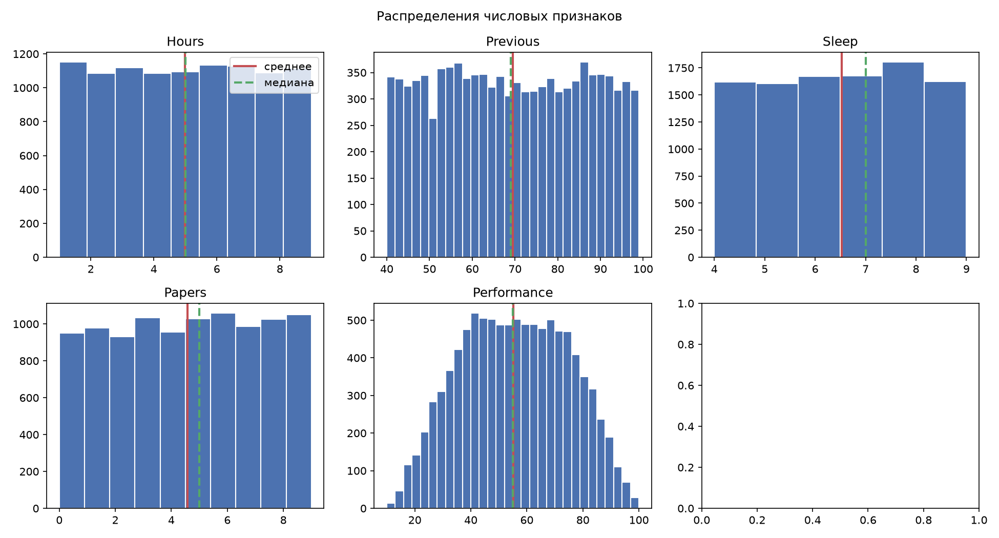
Рисунок 2 — Гистограммы числовых признаков
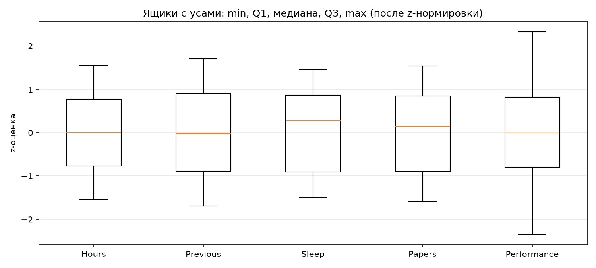
Рисунок 3 — Ящики с усами (усы — минимум и максимум)
Категориальный признак Extracurricular сбалансирован:
5052 записи «No» и 4948 «Yes». Распределения успеваемости в двух группах
почти одинаковы (рисунок 4).
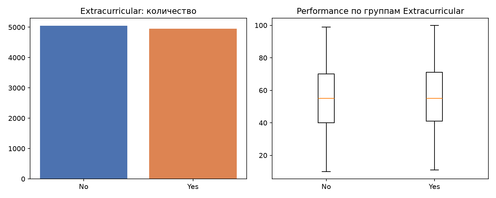
Рисунок 4 — Категориальный признак Extracurricular
Extracurricular закодирован бинарно:
No → 0, Yes → 1. Для двух категорий это эквивалентно one-hot кодированию
с удалением одного столбца (иначе столбцы one-hot вместе со свободным
членом дали бы вырожденную матрицу XTX).Корреляционная матрица (рисунок 5) показывает, что признаки между собой
практически не коррелируют (|r| (|r| < 0,02)lt; 0,03), то есть мультиколлинеарности нет.
С целевой переменной сильнее всего связаны Previous (r = 0,915)
и Hours (r = 0,375); корреляция остальных признаков меньше 0,06.
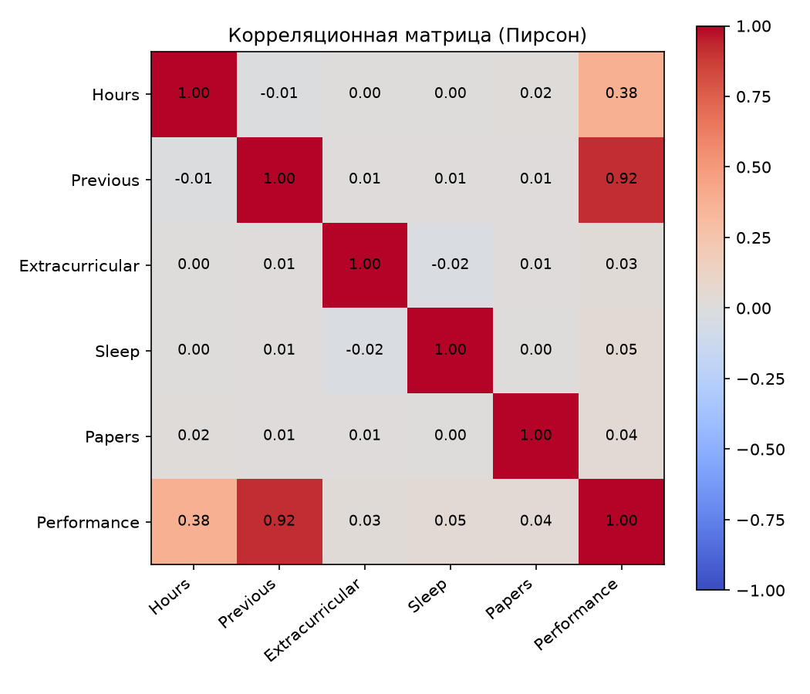
Рисунок 5 — Корреляционная матрица
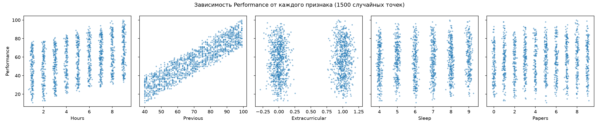
Рисунок 6 — Диаграммы рассеяния Performance от каждого признака
Модель множественной линейной регрессии:
ŷ = b0 + b1x1 + b2x2 + … + bpxp.
По МНК коэффициенты выбираются так, чтобы минимизировать сумму квадратов отклонений фактических значений от предсказанных:
Q(B) = Σ (yi − ŷi)² = (Y − XB)T(Y − XB) → min,
где X — матрица признаков, дополненная слева столбцом единиц (для свободного члена b0). Приравнивая градиент к нулю, ∂Q/∂B = −2XTY + 2XTXB = 0, получаем систему нормальных уравнений:
(XTX) B = XTY.
Обращать матрицу XTX не требуется: система решается
собственной реализацией метода Гаусса с выбором главного элемента
по столбцу (функция solve_gauss в linreg.py).
Это численно устойчивее явного вычисления (XTX)−1.
Функции np.linalg, sklearn и другие готовые решатели
не используются; NumPy служит только контейнером массивов и для матричного
умножения.
def fit(self, x, y):
xd = self._design(x) # [1 | X]
beta = solve_gauss(xd.T @ xd, xd.T @ y) # (X^T X) B = X^T Y
self.intercept_, self.coef_ = beta[0], beta[1:]
Качество оценивается коэффициентом детерминации:
R² = 1 − SSres / SStot = 1 − Σ(yi − ŷi)² / Σ(yi − ȳ)².
R² показывает долю дисперсии целевой переменной, объяснённую моделью: 1 — идеальная модель, 0 — модель не лучше константы ȳ. Дополнительно приведены скорректированный R² (R²adj = 1 − (1 − R²)(n − 1)/(n − p − 1), штрафует за лишние признаки) и RMSE.
Так как модель обучается на нормированных признаках, программа пересчитывает коэффициенты в исходные единицы: bj = βj / σj, b0 = β0 − Σ bjμj. Нормированные коэффициенты βj удобны для сравнения важности признаков (изменение Performance при росте признака на одно стандартное отклонение), исходные — для содержательной интерпретации.
Проверка корректности. Файл test_linreg.py содержит
11 модульных тестов. В частности, реализация воспроизводит пример из
методического пособия (Ŝ = 0,2787 + 0,1229·Y − 0,0294·W), точно
восстанавливает коэффициенты на данных без шума и совпадает с эталоном
np.linalg.lstsq до 10−9 на зашумлённых данных
(эталон используется только в тестах).
Построены три модели с разными наборами признаков. Наборы выбраны так,
чтобы проверить, насколько каждая группа признаков объясняет успеваемость:
полный набор; два наиболее коррелированных признака; набор без самого
сильного признака Previous.
Performance = −33,922 + 2,8505·Hours + 1,0177·Previous + 0,6232·Extracurricular + 0,4721·Sleep + 0,1897·Papers
| Признак | β (норм.) | b (исх. ед.) |
|---|---|---|
| Previous | 17,652 | 1,0177 |
| Hours | 7,380 | 2,8505 |
| Sleep | 0,799 | 0,4721 |
| Papers | 0,544 | 0,1897 |
| Extracurricular | 0,312 | 0,6232 |
Таблица 3 — Коэффициенты модели 1
R² (тест) = 0,9885, R² (обучение) = 0,9887, RMSE = 2,05 балла. Все коэффициенты положительны: каждый фактор повышает успеваемость. Каждый дополнительный час учёбы даёт ≈ 2,85 балла, каждый балл предыдущих экзаменов ≈ 1,02 балла, участие во внеучебной деятельности ≈ 0,62 балла.
Performance = −29,756 + 2,8541·Hours + 1,0189·Previous
R² (тест) = 0,9851, R² (обучение) = 0,9859, RMSE = 2,33 балла. Всего два признака объясняют 98,5 % дисперсии — на 0,34 п.п. меньше, чем полная модель. Коэффициенты практически совпадают с моделью 1, потому что признаки не коррелируют между собой: удаление слабых признаков не смещает оценки сильных, а лишь увеличивает остаточный разброс.
Performance = 35,760 + 2,7890·Hours + 1,3283·Extracurricular + 0,5744·Sleep + 0,2701·Papers
R² (тест) = 0,1371, R² (обучение) = 0,1469, RMSE = 17,74 балла.
Без прошлых оценок модель объясняет лишь 14 % дисперсии; ошибка выросла
почти в 9 раз. Практически вся эта доля обеспечивается Hours
(однофакторная модель по Hours даёт R² = 0,137). На рисунке 7
видно, что прогноз модели 3 «сжат» в полосу 40–70 баллов и не различает
сильных и слабых студентов.
| Модель | Признаков | R² train | R² test | adj. R² test | RMSE test |
|---|---|---|---|---|---|
| 1 — все признаки | 5 | 0,9887 | 0,9885 | 0,9885 | 2,047 |
| 2 — Hours + Previous | 2 | 0,9859 | 0,9851 | 0,9851 | 2,328 |
| 3 — без Previous | 4 | 0,1469 | 0,1371 | 0,1353 | 17,740 |
| 4 (бонус) — все + синтетические | 7 | 0,9887 | 0,9885 | 0,9885 | 2,046 |
Таблица 4 — Сравнение моделей
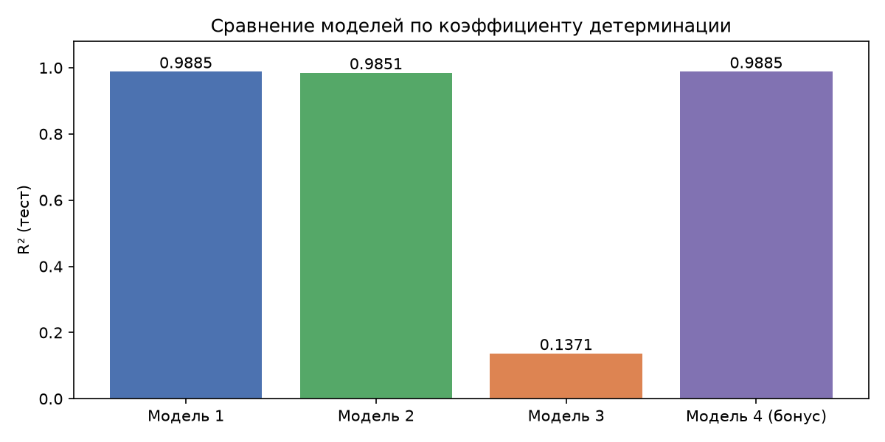
Рисунок 7 — R² моделей на тестовой выборке
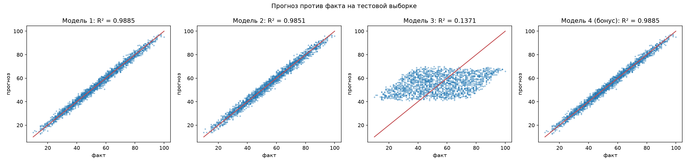
Рисунок 8 — Прогноз против факта (красная линия — идеальный прогноз)
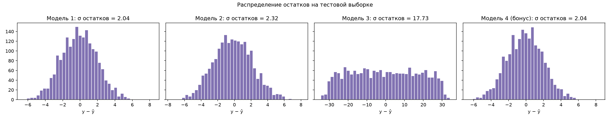
Рисунок 9 — Распределение остатков
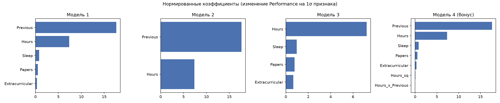
Рисунок 10 — Нормированные коэффициенты моделей
Чтобы оценить вклад каждого признака отдельно, построены также однофакторные модели (рисунок 11). Для линейной регрессии с одним признаком R² равен квадрату коэффициента корреляции.
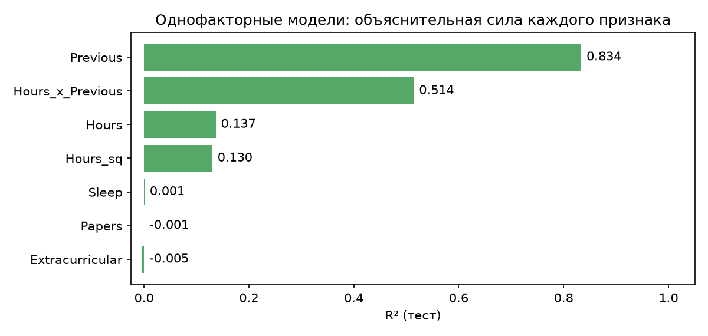
Рисунок 11 — R² однофакторных моделей
Во всех моделях R² на обучающей и тестовой выборках отличается не более чем на 0,01, т. е. переобучения нет — что ожидаемо для линейной модели с небольшим числом признаков и почти 8000 обучающих примеров. Остатки моделей 1 и 2 распределены симметрично вокруг нуля с σ ≈ 2 балла.
В модель 4 к полному набору признаков добавлены два синтетических:
Hours_x_Previous = Hours · Previous — взаимодействие:
гипотеза «час учёбы полезнее сильному студенту»;Hours_sq = Hours² — гипотеза об убывающей отдаче от
учёбы (нелинейность).Сам по себе признак-взаимодействие информативен: однофакторная модель
по Hours_x_Previous даёт R² = 0,514 — почти вчетверо больше,
чем по Hours (0,137), так как он вбирает в себя информацию
о прошлых оценках. Однако в полной модели его коэффициент практически равен
нулю (β = −0,056 против 17,7 у Previous), а R² не изменился
(0,98852 → 0,98853, RMSE 2,047 → 2,046). То же для Hours_sq
(β = 0,088).
Вывод: зависимость успеваемости от признаков в этом датасете аддитивная и линейная — эффекты факторов просто складываются, без взаимодействий и нелинейности. Это подтверждается и формой остатков (рисунок 9): у модели 1 в них нет систематической структуры. Синтетические признаки здесь ничего не добавляют и лишь усложняют модель; на данных с нелинейной зависимостью тот же приём дал бы прирост R².
Sleep, Papers,
Extracurricular по отдельности почти ничего не объясняют
(R² ≈ 0), но статистически полезны в полной модели: вместе они
добавляют ≈ 0,34 п.п. R² и снижают RMSE с 2,33 до 2,05. Их эффект мал,
но не нулевой: +0,47 балла за час сна, +0,19 за пробный вариант,
+0,62 за внеучебную активность.| Файл | Содержание |
|---|---|
linreg.py | МНК (метод Гаусса), R², RMSE, разбиение, z-нормировка |
main.py | Статистика, графики, предобработка, обучение и сравнение моделей |
test_linreg.py | 11 модульных тестов |
data/Student_Performance.csv | Датасет |
results.md | Таблицы результатов, генерируются main.py |
figures/ | Графики, генерируются main.py |
Команды запуска:
python3 main.py # расчёт, results.md и figures/ python3 -m unittest -v # тесты